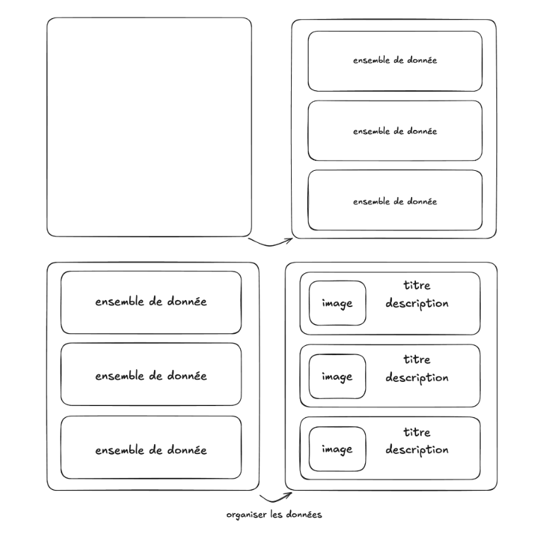

✅ Adataviz
- Durée : 2 semaine
- Type de projet : seul / pair programming
- Nom du repo :
adataviz-[nom_github]
📦 Modalités de rendu
Vous pouvez développer en local sur votre ordinateur mais pensez à push régulièrement sur la branche main du repository git.
⚠️ Important : Vous devez avoir poussé (git push) votre dernier commit la veille de la soutenance à minuit au plus tard, afin qu’il soit pris en compte pour l’évaluation.
🎯 Objectif du projet
L'objectif du projet est de créer un site web qui affiche des données à partir d'une des API OpenData de Paris : https://opendata.paris.fr/. Votre site web devra afficher sous forme de liste les données choisies avec des filtres ainsi qu'un système de pagination. Votre site web devra utiliser CSS pour mettre en valeur les données en personnalisant l'apparence du site.
⚙️ Initialisation du projet
- Ouvre un terminal dans votre dossier de vos projets
- Crée le projet avec
pnpm create vite
- Sélectionne 'Vanilla' pour le framework
- Sélectionne 'JavaScript' pour le langage
- N'installe pas les dépendances automatiquement
- Utilise
cd adataviz pour aller dans le dossier, puis code . pour l'ouvrir dans VSCode
- Utilise la commande
pnpm install pour installer les dépendances dans le dossier du projet
Tu peux maintenant utiliser la commande pnpm dev à chaque fois que tu veux démarrer le projet, puis tu peux le visualiser sur http://localhost:5173/.
🧰 Pré-requis techniques
Pour mener à bien ce projet, il est nécessaire de maîtriser :
- les bases du terminal
- les bases de HTML & CSS
- les bases du JavaScript
🎓 Compétences à acquérir
🧪 Compétences avancé
🧩 Fonctionnalités à développer
⚠️ Réalisez toutes les fonctionnalités obligatoires avant de passer aux bonus.
🔹 1. Afficher les données depuis l’API avec un fetch
- Récupérer les données depuis l’API fournie.
- Créer une fonction pour récuperer les données de l'API
- Afficher ces données sur la page

🔹 2. Ajouter un bouton “voir plus” (“See more”)
Prévoir un affichage alternatif lorsque certaines données sont absentes (par exemple : afficher “Aucune description disponible” ou une image par défaut).
- Créer un bouton permettant d’afficher ou de masquer le contenu de la description
- Mettre à jour l’affichage du DOM avec un changement visuel : bouton doit afficher “voir moins” lorsque le contenu est déplié, et “voir plus” lorsqu’il est replié
- Garantir une mise en page responsive une fois le contenu affiché (ex. adapter la taille du texte ou la disposition sur mobile)


🔹 3. Ajouter une barre de recherche (SearchBar)
- Créer une barre de recherche dans la page d’accueil et déclencher la recherche lors du clic sur le bouton “rechercher”
- Rendre la recherche insensible à la casse en convertissant les textes avec toLowerCase()
- Faire en sorte de d'utiliser le paramètre de requête where pour filterer la recherche et mettre à jour le résultat


🚫 Ce que vous ne devez pas faire
- ❌ Utiliser un framework frontend (type React ou Vue.js)
- ❌ Coder votre propre backend/base de données
💎 Bonus possibles
- Améliorer le design et l'UX générale
- Gérer tous les cas d'erreur possible (vous pouvez contacter votre encadrant.e pour vous aider 😁)
- utiliser une variable offset (ex :
let offset = 20)
- au clic sur un bouton charger plus, afficher 20 éléments suppélementaire
- ajouter un loader pour attendre les données / une fois les données afficher masquer le loader
- Intégrer plusieures APIs
- Intégrer une map pour visualiser les données
- Intégrer une bibliothèque pour afficher des graphes de données